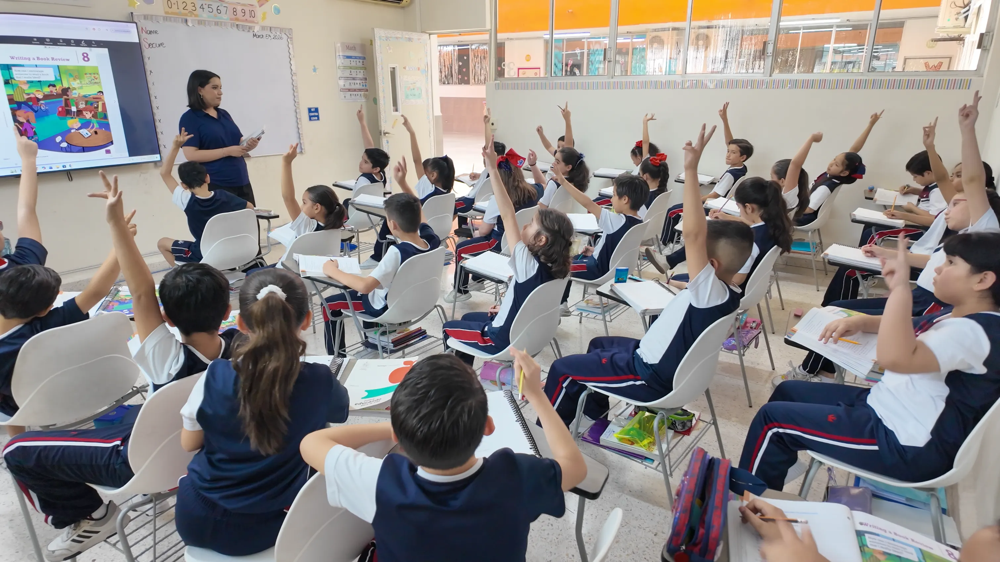
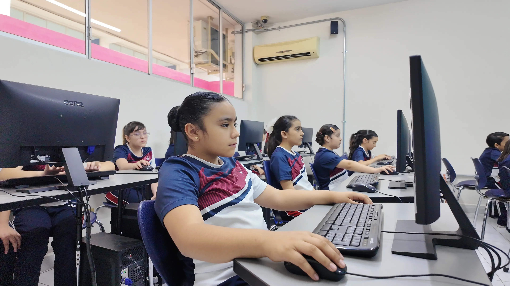
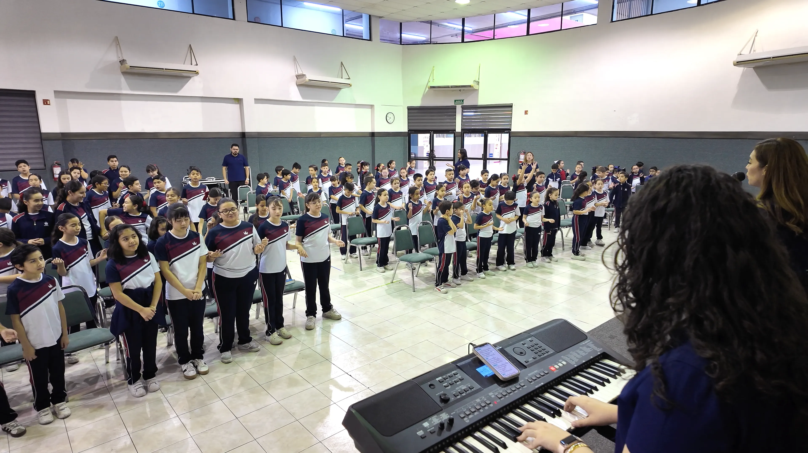
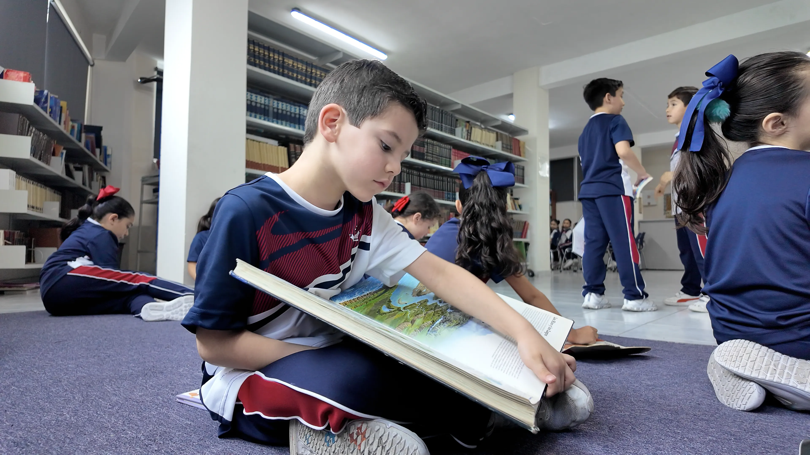

King's Hill School
Una institución educativa cristiana con 35 años de experiencia formando generaciones con excelencia académica y fundamentos bíblicos sólidos. Acompañamos a cada alumno en su crecimiento intelectual, espiritual y personal, dentro de un entorno bilingüe que amplía su visión y fortalece su preparación. Con incorporación oficial ante la SEP y la UANL, educamos para que sean establecidos en verdad y aprendan a caminar en ella.

Innovación y Excelencia
- Excelencia académica bilingüe que abre puertas al mundo.
- Uso responsable y productivo de la tecnología adecuado a cada edad.

Identidad y Fe
- Formación cristiana intencional y auténtica.
- Acompañamiento espiritual para guiar corazones con propósito.

Entorno Seguro
- Metodologías activas y aprendizaje verdaderamente significativo.
- Ambiente cálido, seguro y con atención personalizada por docentes capacitados.
Nuestra Oferta Educativa
{{ divisionesData[activeTab].name }}
{{ divisionesData[activeTab].desc }}